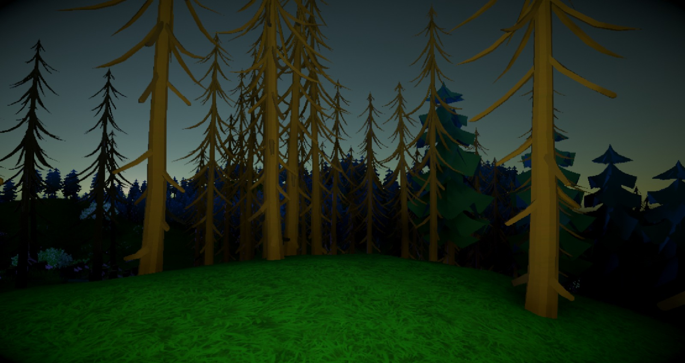
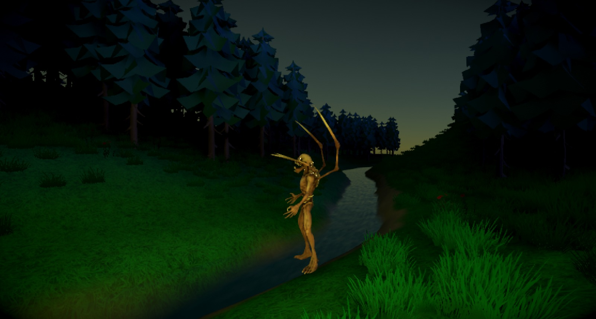
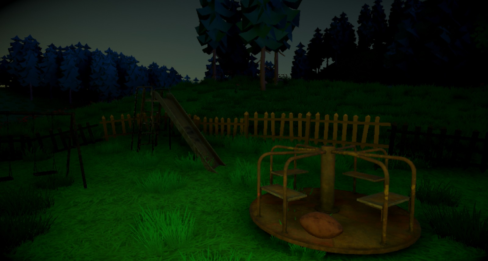
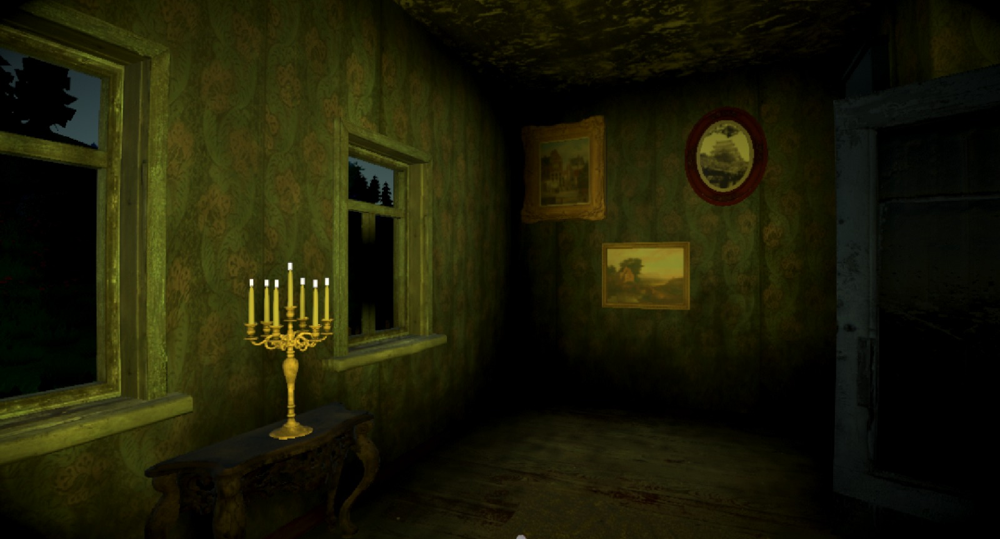

Videojuego de terror desarrollado en Unity. El proyecto destaca por su diseño de niveles *low-poly*, gestión avanzada de iluminación para crear tensión atmosférica, y mecánicas de exploración en entornos abiertos e interiores detallados.



